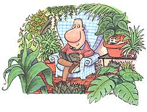

LAST LAUGH
Too much oxygen can be dangerous thing.
W hen the first frost hit, joy and I were almost ready. The garden was completely mulched, the tomatoes were covered, the hoses were all properly stored, and I felt quite confident that Jack Frost could go sit on a zucchini.
Unfortunately we left a few house plants outdoors-umbrella trees, elephant-ear begonias, lacy-leafed ferns with long Latin names-on which the Ice Man took his revenge. Some of the plants are quite delicate-barely alive even in full bloom-and will grow only as a favor to people with green thumbs, like my wife.
"These guys will come back," Joy said, bringing the lifeless sticks inside. Back then, I wondered if she had even noticed how stupendously dead they were. Still, joy has proved that if a gardener is good enough, even death cannot kill them. It's not that the plants would have been missed. A solarium runs the full length of our kitchen, and Joy does not let it lie fallow. Our year-round plant population numbers in the high hundreds, reproducing like rabbits and cross-pollinating each other on window sills and shelves. Surrounded by green, we sit in front of the stove for six months, sipping hot chocolate and plotting new gardens.
Tarzan would feel at ease in our house. Ficus benjamina, the weeping fig that spent all summer on the porch, now grows high in a thicket around my desk, a migrating Birnam Wood like the one that bugged Macbeth. Dieffenbachia trees, notably one big-eared Amoena, read over my shoulder. Outside, all is deader than a frosted doorknob, but here in our winter greenhouse, the stove fire roars and crackles, happy for the extra oxygen.
Human brains feel much the same. Take mine, for instance. I may lurch through the summer in a haze of physical labor, but in winter my brain is soaked in oxygen. My life is immersed in great blocks of free time to think and think. And think. I call this phenomenon "The Greenhouse Effect:"
Oregon pioneers called it "cabin fever." These early settlers (who never exactly glowed with good health) sat inside from October to June with virtually no sunlight or fresh air. Sometimes their windows were the bottoms of whiskey bottles (obtained by emptying the contents). Other times, in desperation, they'd hatchet a hole in the wall to let a little light into their moss-festered lives. But, of course, a plain hole turns out to have an R-factor of zero, which can leave a house and body mighty darn cold.
To give you an idea of just how dismal housing actually was back then, remember that pioneer cats voluntarily chose to live out in the barn. And you can't argue with a cat's good sense. Indeed, the Oregon domestic house cat moved indoors only when conditions there were pleasant enough to support plant life.
Speaking of cats, I suddenly spy Boomer, our 15-pound orange cat who gets by on a spoonful of brains and a gallon of apathy. His rotund body is emerging from a leafy glen at the base of an aggressive Dracaena. My fingers scamper to the end of the armchair and jump, plopping like a spider onto his furry cat shoulders. Boomer does a passable back flip from a lay and sinks his sharp fangs directly into his enemy: The Hand That Feeds Him.
He seizes my forearm in his paws and starts to rowel it to bloody ribbons, but I slide the other hand up behind his head into a cat nelson that he can't scrape off. His look explains that he expected this sort of dirty monkey cheat, and he twists free with a grunt, taking a swing with fully deployed claws that lacerate my thumb. He bounces away, and the jungle swallows him once more.
Thumb gushing, I stare at the swaying underbrush where our bookcase used to be. No doubt about it: We've all been cooped up inside for way too long. Thank God we have this jungle to keep us sane 'tit spring...
|
 |
|
|